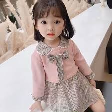

Apa yang sesungguhnya diwakili seorang anak · 어린이가 상징하는 것
Di hampir setiap kebudayaan, seorang anak bukan sekadar manusia kecil yang belum dewasa. Ia adalah simbol hidup — gambaran dari hal-hal yang dianggap paling berharga oleh sebuah masyarakat.
Anak belum dibatasi oleh "sudah terlambat". Ia adalah wujud dari segala yang masih bisa terjadi.
Gairah seorang anak belum pernah dipadamkan oleh kegagalan berulang. Kita rela segalanya untuk menjaganya.
Seperti air hujan yang baru, anak melihat hal yang sama dengan mata berbeda setiap harinya.
Anak cantik bukan karena usaha — melainkan karena keaslian. Tidak ada topeng.
Seperti ulat yang belum tahu ia akan jadi kupu-kupu, anak adalah proses yang indah.
Tertawa seorang anak tidak bisa diabaikan. Kegembiraan mereka merembes ke mana-mana.
"Ketika sebuah festival dirayakan bukan untuk menghormati pencapaian, tapi untuk menghormati keberadaan — itu adalah tanda bahwa sebuah bangsa memahami sesuatu yang mendalam: bahwa cukup menjadi ada, cukup menjadi dirimu sendiri, sudah menjadi sesuatu yang layak dirayakan."
— Tentang Kodomo no Hi & Eorini Nal · 존재 자체로 충분해 (keberadaan itu sudah cukup)

Di Korea, kata 어린이 (eorini) diciptakan oleh Bang Jeong-hwan — untuk mengganti kata lama yang terasa meremehkan anak. Cara kita menyebut seseorang mencerminkan bagaimana kita memandang mereka.
"어린이는 어른의 아버지다."
(Anak-anak adalah bapak dari orang dewasa.)
— adaptasi dari William Wordsworth